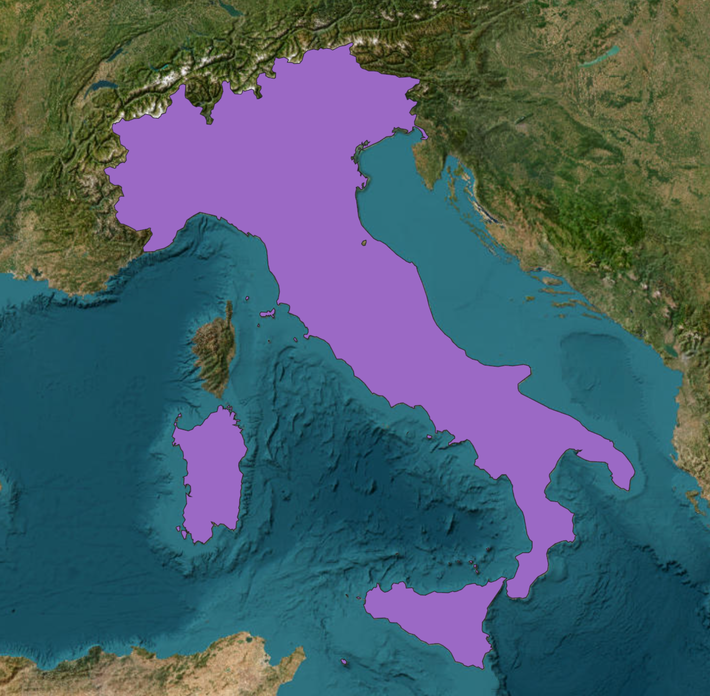

Mapping Air Quality in Italy
This project analyzes air pollution change, land-cover transition, and population exposure in Italy between 2021 and 2023 using GIS-based processing and web visualization.

Overview
Study area
Italy
Period
2021–2023
Main themes
Air quality, land-cover change, population exposure
Main outputs
Maps, tables, charts, bivariate maps, and WebGIS layers
Objectives and data
Research objectives
- Analyze annual air pollutant changes between 2021 and 2023.
- Detect land-cover transitions over the same period.
- Compare pollutant change with assigned land-cover transition zones.
- Assess 2023 population exposure to pollutant concentration classes.
Data sources
- CAMS European Air Quality Reanalysis for NO2, PM2.5, and PM10.
- ESRI 10m Annual Land Cover for 2021 and 2023.
- WorldPop 2023 population count data.
- Case-study and administrative boundary layers.
Processing workflow
The full methodology is described in the Methods page. The workflow follows the laboratory sequence from pollutant preprocessing to land-cover transition analysis, population exposure assessment, and final web visualization.
Pollutant maps
Annual averages
Concentration classes
Pollutant change map
Land-cover change
Zonal statistics
Bivariate maps
Population exposure
Group work division
Student A: Mengyuan Lei
NO2 and Built Area analysis, WebGIS map implementation, and map controls / layer display.
Student B: Mengzhen Han
PM10 and Trees analysis, Results page, statistical charts, and main result interpretation.
Student C: Yueling Tian
PM2.5 and Crops analysis, Home and Methods pages, and final results summary.